Tests
41 test(s) passed
4 test(s) failed, 0 others
Steps
528 step(s) passed
5 step(s) failed, 0 others
Tests
-
HomepageHeaderMyIcivicsMisc Jun 27, 2022 09:54:53 PM failJun 27, 2022 09:54:53 PM Jun 27, 2022 10:03:56 PM 0h 9m 2s+824ms
-
C29 - Can you see an appropriate icon for Donate?
Jun 27, 2022 09:55:06 PM 0h 0m 7s+754ms passStatus Timestamp Details check_circle 9:55:06 PM Donatebutton is displayed 
-
C30 - When you select Donate, are you directed to https://give.icivics.org/?
Jun 27, 2022 09:55:30 PM 0h 0m 21s+75ms passStatus Timestamp Details check_circle 9:55:17 PM Donatebutton is clicked 
check_circle 9:55:30 PM 'Donatebutton is clicked'redirect to corresponding pagehttps://give.icivics.org/q7Mcn0NUdUylSaBbpfwl4w2?_ga=2.122321035.1831921647.1656347115-747313359.1656347114 
-
C31 - Can you see an appropriate icon for Shop?
Jun 27, 2022 09:56:00 PM 0h 0m 26s+968ms passStatus Timestamp Details check_circle 9:56:00 PM Shopbutton is displayed 
-
C32 - When you select Shop, are you directed to https://icivics.myshopify.com/?
Jun 27, 2022 09:56:12 PM 0h 0m 9s+123ms passStatus Timestamp Details check_circle 9:56:08 PM Shopbutton is clicked 
check_circle 9:56:12 PM 'Shopbutton is clicked'redirect to corresponding pagehttps://icivics.myshopify.com/ 
-
C34 - If you are signed in, do you see a My iCivics button instead of Sign In?
Jun 27, 2022 09:56:41 PM 0h 0m 26s+984ms passStatus Timestamp Details check_circle 9:56:41 PM Myicivicsbutton is display after login instead of signin button 
-
C35 - Can you see your avatar icon represented in the button?
Jun 27, 2022 09:57:14 PM 0h 0m 30s+347ms passStatus Timestamp Details check_circle 9:57:14 PM Avatar image is displayed on the button 
-
C35 - Can you see your avatar icon represented in the button?
Jun 27, 2022 09:57:45 PM 0h 0m 27s+861ms passStatus Timestamp Details check_circle 9:57:45 PM My iCivics button has sillouette avatar 
-
C36 - When you select Sign In/My iCivics, does a submenu open below the button?
Jun 27, 2022 09:58:14 PM 0h 0m 27s+310ms passStatus Timestamp Details check_circle 9:58:14 PM myicivics button is clicked and submenu is display 
-
C37 - When you select Sign In, do you see links to Sign In, Register As a Student, Register As A Teacher in the submenu?
Jun 27, 2022 09:58:46 PM 0h 0m 29s+814ms passStatus Timestamp Details check_circle 9:58:45 PM myicivics button is clicked and submenu is display 
check_circle 9:58:45 PM myicivics submenu count is 3 
check_circle 9:58:46 PM myicivcs submenu is MY ICIVICS 
check_circle 9:58:46 PM myicivcs submenu is MY CLASSES 
check_circle 9:58:46 PM myicivcs submenu is MY FAVORITES 
-
C39 -When you select a link in the submenu, are you navigated to the appropriate page?
Jun 27, 2022 10:00:53 PM 0h 2m 4s+2ms passStatus Timestamp Details check_circle 9:59:37 PM The mouse over by xpath : (//a[@title='MY ICIVICS'])[2] is performed. 
check_circle 9:59:37 PM The element [[ChromeDriver: chrome on WINDOWS (eb0ef54f6017dc5774b4a130f3c528f4)] -> xpath: (//a[@title='My iCivics'])[2]] is visible 
check_circle 9:59:37 PM The expected text contains the actual MY ICIVICS 
check_circle 10:00:03 PM The Element MY ICIVICS clicked 
check_circle 10:00:03 PM The expected https://staging.d9.icivics.org/user/9306834 url as same as the https://staging.d9.icivics.org/user/9306834 actual url. 
check_circle 10:00:03 PM The expected text contains the actual Welcome back, 
check_circle 10:00:04 PM The mouse over by xpath : (//a[@title='MY ICIVICS'])[2] is performed. 
check_circle 10:00:04 PM The element [[ChromeDriver: chrome on WINDOWS (eb0ef54f6017dc5774b4a130f3c528f4)] -> xpath: (//a[@title='My Classes'])[2]] is visible 
check_circle 10:00:04 PM The expected text contains the actual MY CLASSES 
check_circle 10:00:28 PM The Element MY CLASSES clicked 
check_circle 10:00:28 PM The expected https://staging.d9.icivics.org/classes url as same as the https://staging.d9.icivics.org/classes actual url. 
check_circle 10:00:28 PM The expected text contains the actual SYNC CLASSROOM CLASSES 
check_circle 10:00:28 PM The mouse over by xpath : (//a[@title='MY ICIVICS'])[2] is performed. 
check_circle 10:00:28 PM The element [[ChromeDriver: chrome on WINDOWS (eb0ef54f6017dc5774b4a130f3c528f4)] -> xpath: (//a[@title='My Favorites'])[2]] is visible 
check_circle 10:00:29 PM The expected text contains the actual MY FAVORITES 
check_circle 10:00:52 PM The Element MY FAVORITES clicked 
check_circle 10:00:52 PM The expected https://staging.d9.icivics.org/favorites url as same as the https://staging.d9.icivics.org/favorites actual url. 
check_circle 10:00:53 PM The expected text contains the actual Lessons from Antiquity 
-
C41 -If you are viewing one of the pages in the Sign In/My iCivics submenu, is that page underlined in the submenu?
Jun 27, 2022 10:03:25 PM 0h 2m 30s+702ms failStatus Timestamp Details check_circle 10:01:45 PM myicivics button is clicked and submenu is display 
check_circle 10:02:20 PM Selected page is underlined 
cancel 10:02:52 PM Selected page is not underlined 
check_circle 10:03:25 PM Selected page is underlined 
check_circle 10:03:25 PM The Element MY ICIVICS clicked 
check_circle 10:03:25 PM Myicivics submenu is close on clicking again 
-
C42 - When you select Sign In / My iCivics again while the submenu is open, does the submenu close?
Jun 27, 2022 10:03:56 PM 0h 0m 29s+415ms passStatus Timestamp Details check_circle 10:03:56 PM The Element MY ICIVICS clicked 
check_circle 10:03:56 PM Myicivics submenu is close on clicking again 
-
-
HomepageHeadermysigninmisc Jun 27, 2022 10:03:57 PM failJun 27, 2022 10:03:57 PM Jun 27, 2022 10:05:57 PM 0h 1m 59s+990ms
-
C29 - Can you see an appropriate icon for Donate?
Jun 27, 2022 10:04:03 PM 0h 0m 5s+56ms passStatus Timestamp Details check_circle 10:04:03 PM Donatebutton is displayed 
-
C30 - When you select Donate, are you directed to https://give.icivics.org/?
Jun 27, 2022 10:04:23 PM 0h 0m 18s+229ms passStatus Timestamp Details check_circle 10:04:12 PM Donatebutton is clicked 
check_circle 10:04:23 PM 'Donatebutton is clicked'redirect to corresponding pagehttps://give.icivics.org/q7Mcn0NUdUylSaBbpfwl4w2?_ga=2.266913675.400226616.1656347649-1477002975.1656347649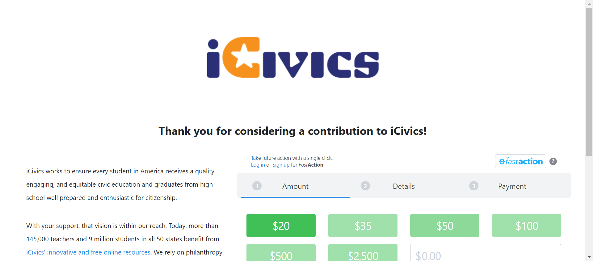 -
C31 - Can you see an appropriate icon for Shop?
Jun 27, 2022 10:04:28 PM 0h 0m 3s+999ms passStatus Timestamp Details check_circle 10:04:28 PM Shopbutton is displayed 
-
C32 - When you select Shop, are you directed to https://icivics.myshopify.com/?
Jun 27, 2022 10:04:38 PM 0h 0m 7s+874ms passStatus Timestamp Details check_circle 10:04:34 PM Shopbutton is clicked 
check_circle 10:04:38 PM 'Shopbutton is clicked'redirect to corresponding pagehttps://icivics.myshopify.com/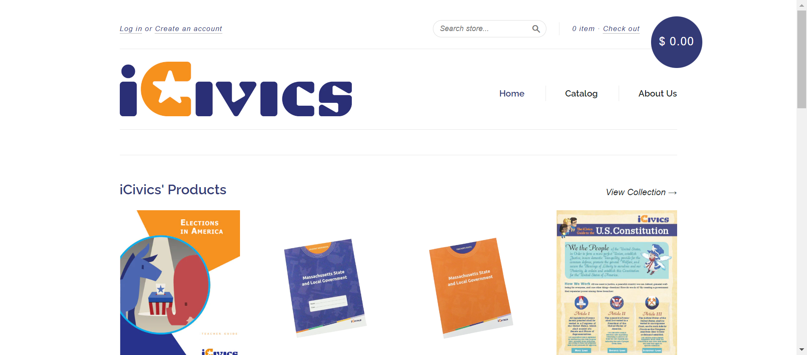 -
C33 - If you are not signed in, do you see a Sign In button instead of My iCivics?
Jun 27, 2022 10:04:43 PM 0h 0m 3s+932ms passStatus Timestamp Details check_circle 10:04:43 PM Signinbutton is displayed 
-
C37 - When you select Sign In, do you see links to Sign In, Register As a Student, Register As A Teacher in the submenu?
Jun 27, 2022 10:04:50 PM 0h 0m 5s+569ms passStatus Timestamp Details check_circle 10:04:49 PM signinbutton is clicked and submenu is displayed 
check_circle 10:04:49 PM signinbutton submenu count is 3 
check_circle 10:04:50 PM signinbutton submenu is SIGN IN 
check_circle 10:04:50 PM signinbutton submenu is REGISTER AS A STUDENT 
check_circle 10:04:50 PM signinbutton submenu is REGISTER AS A TEACHER 
-
C38 - If not signed in and you select a link in the submenu, are you navigated to the appropriate page?
Jun 27, 2022 10:05:09 PM 0h 0m 17s+173ms passStatus Timestamp Details check_circle 10:04:58 PM The mouse over by xpath : (//a[@title='Sign In']//span)[3] is performed. 
check_circle 10:04:59 PM The element [[ChromeDriver: chrome on WINDOWS (e2b0294a298122a19723170f33fd8233)] -> xpath: (//a[@title='Sign In'])[4]] is visible 
check_circle 10:04:59 PM The expected text contains the actual SIGN IN 
check_circle 10:05:01 PM The Element SIGN IN clicked 
check_circle 10:05:01 PM The expected https://staging.d9.icivics.org/user/login url as same as the https://staging.d9.icivics.org/user/login actual url. 
check_circle 10:05:01 PM The expected text contains the actual Log in to iCivics 
check_circle 10:05:01 PM The mouse over by xpath : (//a[@title='Sign In']//span)[3] is performed. 
check_circle 10:05:02 PM The element [[ChromeDriver: chrome on WINDOWS (e2b0294a298122a19723170f33fd8233)] -> xpath: (//li[@class='register as a student']/a)[2]] is visible 
check_circle 10:05:02 PM The expected text contains the actual REGISTER AS A STUDENT 
check_circle 10:05:06 PM The Element REGISTER AS A STUDENT clicked 
check_circle 10:05:06 PM The expected https://staging.d9.icivics.org/user/register?role=student&email=1 url as same as the https://staging.d9.icivics.org/user/register?role=student&email=1 actual url. 
check_circle 10:05:07 PM The expected text contains the actual Student Registration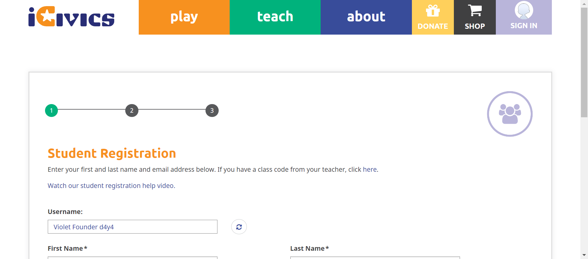 check_circle 10:05:07 PM The mouse over by xpath : (//a[@title='Sign In']//span)[3] is performed.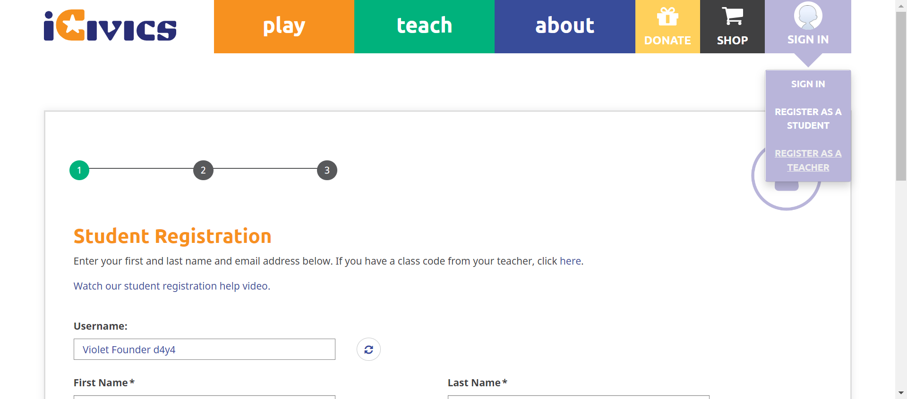 check_circle 10:05:07 PM The element [[ChromeDriver: chrome on WINDOWS (e2b0294a298122a19723170f33fd8233)] -> xpath: (//li[@class='active active-trail last register as a teacher']/a)[2]] is visible 
check_circle 10:05:07 PM The expected text contains the actual REGISTER AS A TEACHER 
check_circle 10:05:09 PM The Element REGISTER AS A TEACHER clicked 
check_circle 10:05:09 PM The expected https://staging.d9.icivics.org/user/register?role=teacher url as same as the https://staging.d9.icivics.org/user/register?role=teacher actual url. check_circle 10:05:09 PM The expected text contains the actual Educator / Parent Registration 
-
C41 - If you are viewing one of the pages in the Sign In/My iCivics submenu, is that page underlined in the submenu?
Jun 27, 2022 10:05:49 PM 0h 0m 38s+511ms failStatus Timestamp Details check_circle 10:05:15 PM Signinbutton is displayed 
check_circle 10:05:26 PM Selected page is underlined 
cancel 10:05:37 PM Selected page is not underlined check_circle 10:05:49 PM Selected page is underlined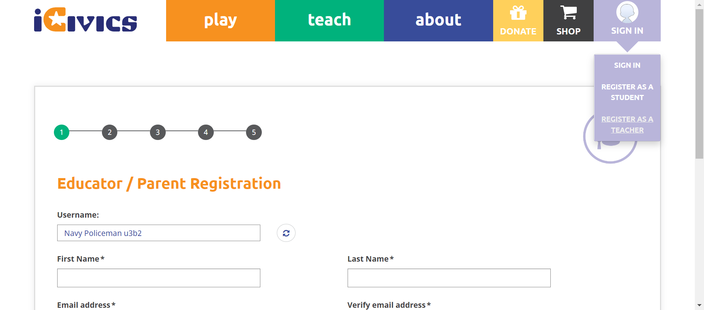 check_circle 10:05:49 PM The Element SIGN IN clicked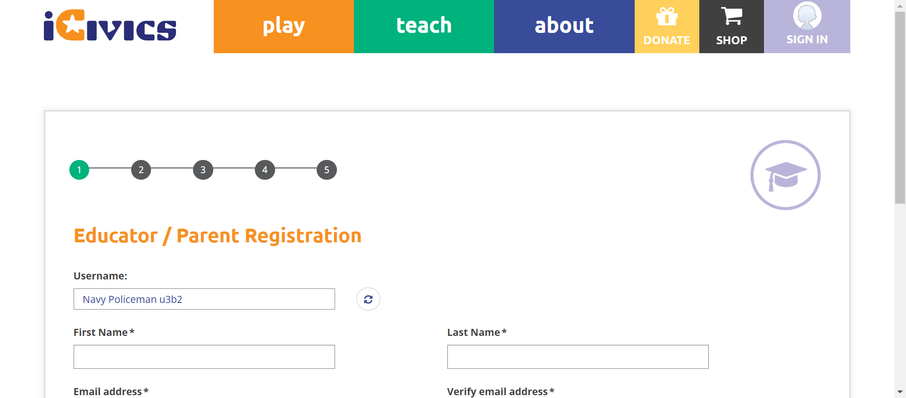 check_circle 10:05:49 PM signin submenu is close after clicking again 
-
C42 - When you select Sign In / My iCivics again while the submenu is open, does the submenu close?
Jun 27, 2022 10:05:57 PM 0h 0m 5s+249ms passStatus Timestamp Details check_circle 10:05:56 PM The Element SIGN IN clicked 
check_circle 10:05:57 PM signin submenu is close after clicking again 
-
-
HomepageHeader Jun 27, 2022 10:05:57 PM failJun 27, 2022 10:05:57 PM Jun 27, 2022 10:16:49 PM 0h 10m 52s+150ms
-
C3 - While on all other pages, do you see buttons for Play, Teach, About, Donate, Shop, and My iCivics in the navigation bar?
Jun 27, 2022 10:06:53 PM 0h 0m 54s+903ms passStatus Timestamp Details check_circle 10:06:25 PM playbutton is display 
check_circle 10:06:25 PM Teachbutton is display 
check_circle 10:06:25 PM aboutbutton is display 
check_circle 10:06:25 PM donatebutton is display 
check_circle 10:06:26 PM Shopbutton is display 
check_circle 10:06:26 PM Signin button Verified successfully 
check_circle 10:06:26 PM The Element SIGN IN clicked 
check_circle 10:06:29 PM The Element SIGN IN clicked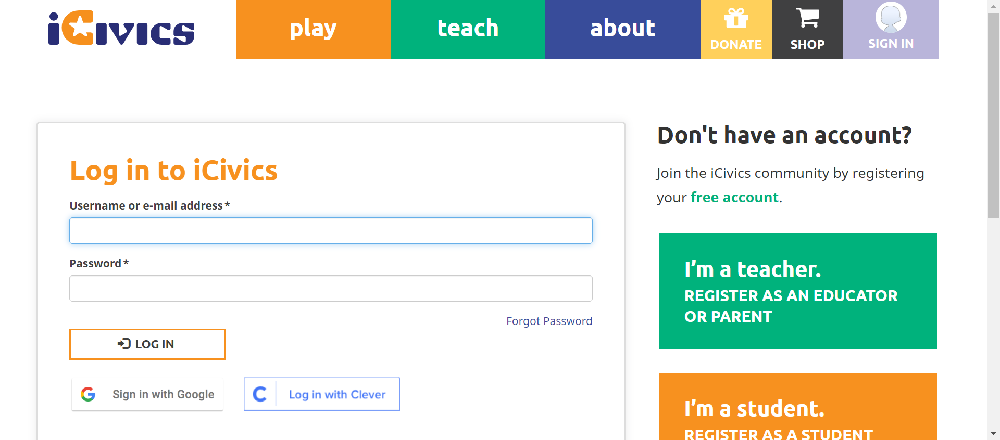 check_circle 10:06:50 PM The Element LOG IN clicked check_circle 10:06:53 PM Myicivicsbutton Verified successfully 
-
C3 - While on all other pages, do you see buttons for Play, Teach, About, Donate, Shop, and My iCivics in the navigation bar?
Jun 27, 2022 10:07:48 PM 0h 0m 53s+812ms passStatus Timestamp Details check_circle 10:07:21 PM The Element SIGN IN clicked 
check_circle 10:07:23 PM The Element SIGN IN clicked 
check_circle 10:07:44 PM The Element LOG IN clicked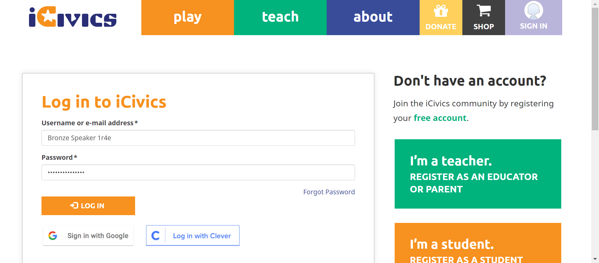 check_circle 10:07:47 PM playbutton Verified successfully 
check_circle 10:07:48 PM Teachbutton Verified successfully 
check_circle 10:07:48 PM aboutbutton Verified successfully 
check_circle 10:07:48 PM Donatebutton Verified successfully 
check_circle 10:07:48 PM Shopbutton Verified successfully 
check_circle 10:07:48 PM Myicivicsbutton Verified successfully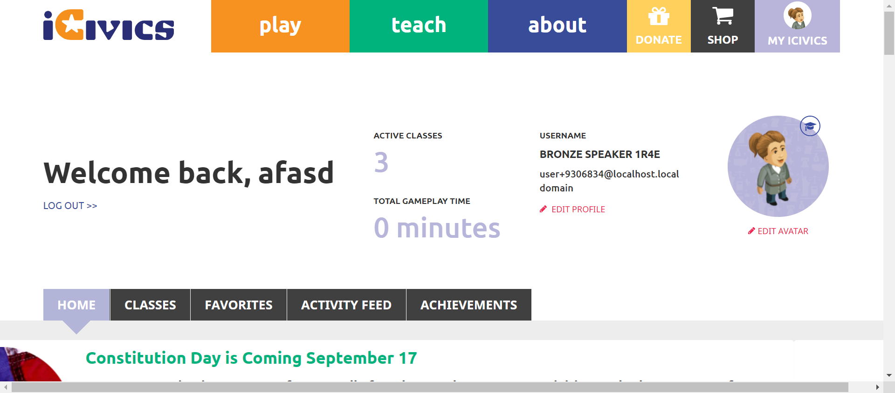 -
C4 - Are all header elements consistent with those in the mockups?(Need to take one content from each content type
Jun 27, 2022 10:11:21 PM 0h 3m 31s+90ms passStatus Timestamp Details check_circle 10:08:27 PM Blog checkbox is checked now 
check_circle 10:08:33 PM Page is display 
check_circle 10:08:33 PM Icivics logo is display 
check_circle 10:08:33 PM playbutton is display 
check_circle 10:08:33 PM Teachbutton is display 
check_circle 10:08:33 PM aboutbutton is display 
check_circle 10:08:34 PM donatebutton is display 
check_circle 10:08:34 PM Shopbutton is display 
check_circle 10:08:34 PM Signinbutton is displayed check_circle 10:08:39 PM curriculum checkbox is already checked 
check_circle 10:08:54 PM Page is display 
check_circle 10:08:54 PM Icivics logo is display 
check_circle 10:08:54 PM playbutton is display 
check_circle 10:08:54 PM Teachbutton is display 
check_circle 10:08:55 PM aboutbutton is display 
check_circle 10:08:55 PM donatebutton is display 
check_circle 10:08:55 PM Shopbutton is display 
check_circle 10:08:55 PM Signinbutton is displayed 
check_circle 10:09:11 PM DBQUEST checkbox is checked now 
check_circle 10:09:16 PM Page is display 
check_circle 10:09:16 PM Icivics logo is display 
check_circle 10:09:16 PM playbutton is display 
check_circle 10:09:17 PM Teachbutton is display 
check_circle 10:09:17 PM aboutbutton is display 
check_circle 10:09:17 PM donatebutton is display 
check_circle 10:09:17 PM Shopbutton is display 
check_circle 10:09:17 PM Signinbutton is displayed 
check_circle 10:09:33 PM Game checkbox is checked now 
check_circle 10:09:43 PM Page is display 
check_circle 10:09:44 PM Icivics logo is display 
check_circle 10:09:44 PM playbutton is display 
check_circle 10:09:44 PM Teachbutton is display 
check_circle 10:09:44 PM aboutbutton is display 
check_circle 10:09:44 PM donatebutton is display 
check_circle 10:09:45 PM Shopbutton is display 
check_circle 10:09:45 PM Signinbutton is displayed 
check_circle 10:10:00 PM Lessonplay checkbox is checked now 
check_circle 10:10:11 PM Page is display 
check_circle 10:10:11 PM Icivics logo is display 
check_circle 10:10:11 PM playbutton is display 
check_circle 10:10:12 PM Teachbutton is display 
check_circle 10:10:12 PM aboutbutton is display 
check_circle 10:10:12 PM donatebutton is display 
check_circle 10:10:12 PM Shopbutton is display 
check_circle 10:10:12 PM Signinbutton is displayed 
check_circle 10:10:27 PM Professional development checkbox is checked now 
check_circle 10:10:38 PM Page is display 
check_circle 10:10:38 PM Icivics logo is display 
check_circle 10:10:38 PM playbutton is display 
check_circle 10:10:39 PM Teachbutton is display 
check_circle 10:10:39 PM aboutbutton is display 
check_circle 10:10:39 PM donatebutton is display 
check_circle 10:10:39 PM Shopbutton is display 
check_circle 10:10:39 PM Signinbutton is displayed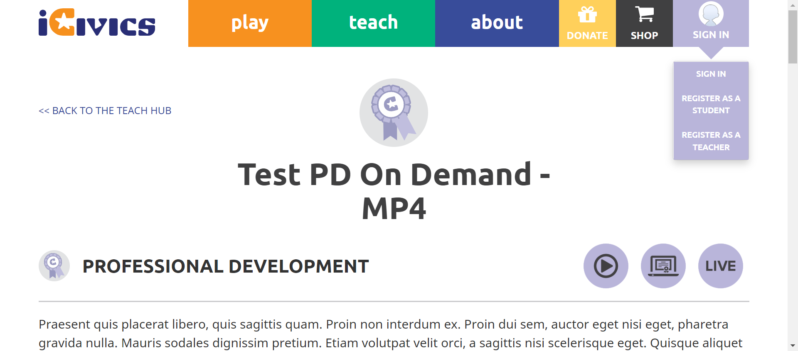 check_circle 10:10:54 PM Video checkbox is checked now 
check_circle 10:10:59 PM Page is display 
check_circle 10:10:59 PM Icivics logo is display 
check_circle 10:10:59 PM playbutton is display 
check_circle 10:10:59 PM Teachbutton is display 
check_circle 10:11:00 PM aboutbutton is display 
check_circle 10:11:00 PM donatebutton is display 
check_circle 10:11:00 PM Shopbutton is display 
check_circle 10:11:00 PM Signinbutton is displayed 
check_circle 10:11:15 PM Webquest checkbox is checked now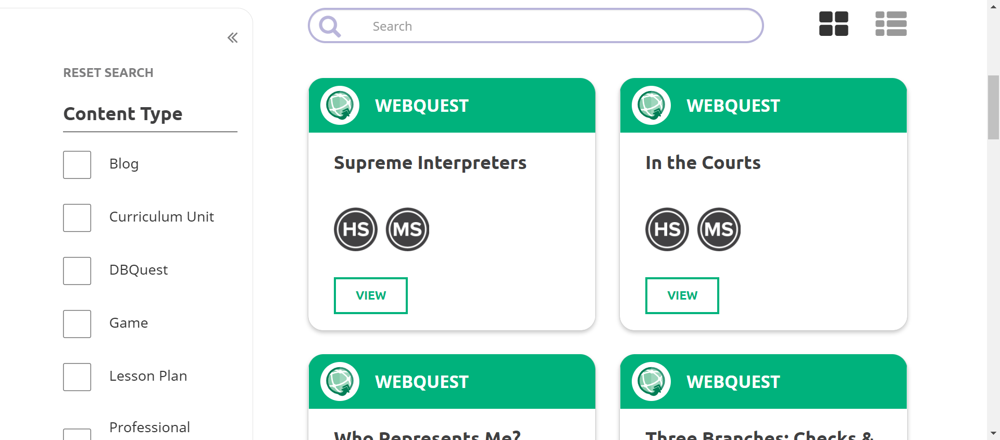 check_circle 10:11:20 PM Page is display 
check_circle 10:11:20 PM Icivics logo is display 
check_circle 10:11:20 PM playbutton is display 
check_circle 10:11:20 PM Teachbutton is display 
check_circle 10:11:20 PM aboutbutton is display 
check_circle 10:11:21 PM donatebutton is display 
check_circle 10:11:21 PM Shopbutton is display 
check_circle 10:11:21 PM Signinbutton is displayed 
-
C6 - Do all buttons have hover/click states?
Jun 27, 2022 10:13:12 PM 0h 1m 48s+990ms passStatus Timestamp Details check_circle 10:11:50 PM The mouse over by xpath : (//a[@title='Play Games'])[3] is performed. 
check_circle 10:11:53 PM Expected Tooltip and Actual Tooltip text matched successfully 
check_circle 10:11:53 PM The Element play clicked 
check_circle 10:11:57 PM The mouse over by xpath : (//a[@title='Search Our Library'])[3] is performed. 
check_circle 10:12:00 PM Expected Tooltip and Actual Tooltip text matched successfully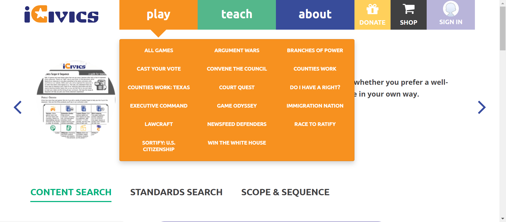 check_circle 10:12:00 PM The Element teach clicked 
check_circle 10:12:03 PM The mouse over by xpath : (//a[@title='Learn how you can financially support and fund iCivics.'])[3] is performed. 
check_circle 10:12:07 PM Expected Tooltip and Actual Tooltip text matched successfully 
check_circle 10:12:07 PM The Element about clicked 
check_circle 10:12:10 PM The mouse over by xpath : (//a[@title='Donate money to iCivics quickly and easily online.'])[2] is performed. 
check_circle 10:12:13 PM Expected Tooltip and Actual Tooltip text matched successfully 
check_circle 10:12:22 PM The Element DONATE clicked 
check_circle 10:12:28 PM The mouse over by xpath : (//a[@title='Shop iCivics.'])[2] is performed. 
check_circle 10:12:31 PM Expected Tooltip and Actual Tooltip text matched successfully 
check_circle 10:12:36 PM The Element SHOP clicked 
check_circle 10:12:51 PM The mouse over by xpath : (//a[@title='Sign In'])[3] is performed. 
check_circle 10:12:54 PM Expected Tooltip and Actual Tooltip text matched successfully 
check_circle 10:12:54 PM The Element SIGN IN clicked 
check_circle 10:12:57 PM The Element SIGN IN clicked 
check_circle 10:13:02 PM The Element LOG IN clicked 
check_circle 10:13:05 PM The mouse over by xpath : (//a[@title='MY ICIVICS'])[2] is performed. 
check_circle 10:13:11 PM Expected Tooltip and Actual Tooltip text matched successfully 
check_circle 10:13:12 PM The Element MY ICIVICS clicked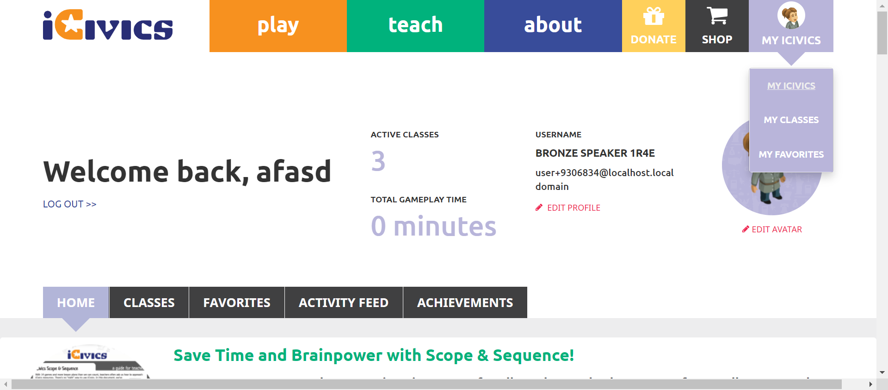 -
C6 - Do all buttons have hover/click states?
Jun 27, 2022 10:15:49 PM 0h 2m 32s+466ms passStatus Timestamp Details check_circle 10:13:43 PM The Element SIGN IN clicked 
check_circle 10:13:45 PM The Element SIGN IN clicked 
check_circle 10:14:06 PM The Element LOG IN clicked 
check_circle 10:14:09 PM The mouse over by xpath : (//a[@title='Play Games'])[3] is performed. 
check_circle 10:14:12 PM Expected Tooltip and Actual Tooltip text matched successfully 
check_circle 10:14:13 PM The Element play clicked 
check_circle 10:14:16 PM The mouse over by xpath : (//a[@title='Search Our Library'])[3] is performed. 
check_circle 10:14:19 PM Expected Tooltip and Actual Tooltip text matched successfully 
check_circle 10:14:19 PM The Element teach clicked 
check_circle 10:14:23 PM The mouse over by xpath : (//a[@title='Learn how you can financially support and fund iCivics.'])[3] is performed. 
check_circle 10:14:26 PM Expected Tooltip and Actual Tooltip text matched successfully 
check_circle 10:14:26 PM The Element about clicked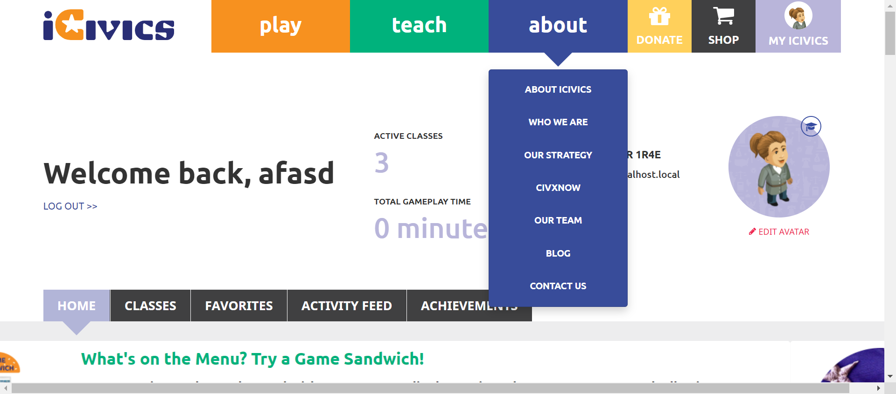 check_circle 10:14:30 PM The mouse over by xpath : (//a[@title='Donate money to iCivics quickly and easily online.'])[2] is performed. 
check_circle 10:14:33 PM Expected Tooltip and Actual Tooltip text matched successfully 
check_circle 10:14:41 PM The Element DONATE clicked 
check_circle 10:15:09 PM The mouse over by xpath : (//a[@title='Shop iCivics'])[2] is performed. 
check_circle 10:15:12 PM Expected Tooltip and Actual Tooltip text matched successfully 
check_circle 10:15:15 PM The Element SHOP clicked 
check_circle 10:15:42 PM The mouse over by xpath : (//a[@title='MY ICIVICS'])[2] is performed. 
check_circle 10:15:48 PM Expected Tooltip and Actual Tooltip text matched successfully 
check_circle 10:15:49 PM The Element MY ICIVICS clicked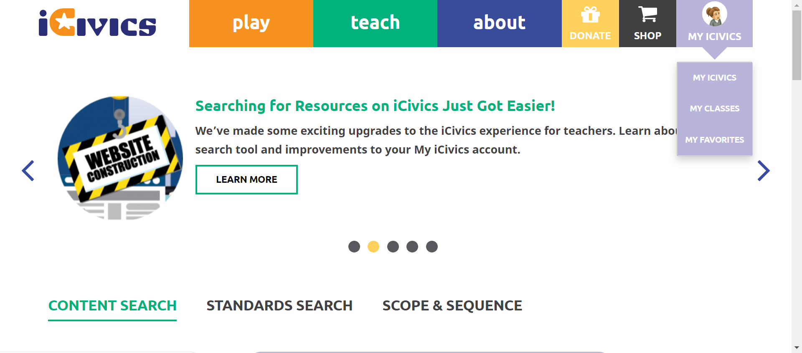 -
C7 - Does the header resize responsively at different resolutions?
Jun 27, 2022 10:16:49 PM 0h 0m 55s+812ms failStatus Timestamp Details check_circle 10:16:23 PM Ipad potrait resize is successfull 
check_circle 10:16:23 PM Hamburger Icon is displayed successfully 
check_circle 10:16:23 PM cardtitle is displayed successfully 
check_circle 10:16:27 PM Ipad landscape resize is successfull 
cancel 10:16:27 PM Hamburger Icon is not displayed successfully 
check_circle 10:16:27 PM cardtitle is displayed successfully 
check_circle 10:16:30 PM Iphone potrait resize is successfull 
check_circle 10:16:31 PM Hamburger Icon is displayed successfully 
check_circle 10:16:34 PM Iphone landscape resize is successfull 
check_circle 10:16:34 PM Hamburger Icon is displayed successfully 
check_circle 10:16:37 PM Hamburger Icon is displayed successfully 
check_circle 10:16:41 PM Hamburger Icon is displayed successfully 
check_circle 10:16:41 PM cardtitle is displayed successfully 
check_circle 10:16:41 PM cardtitle is displayed successfully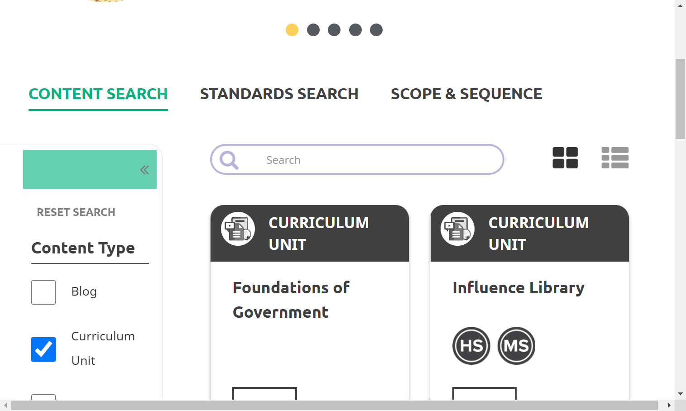 check_circle 10:16:42 PM Ipad landscape resize is successfull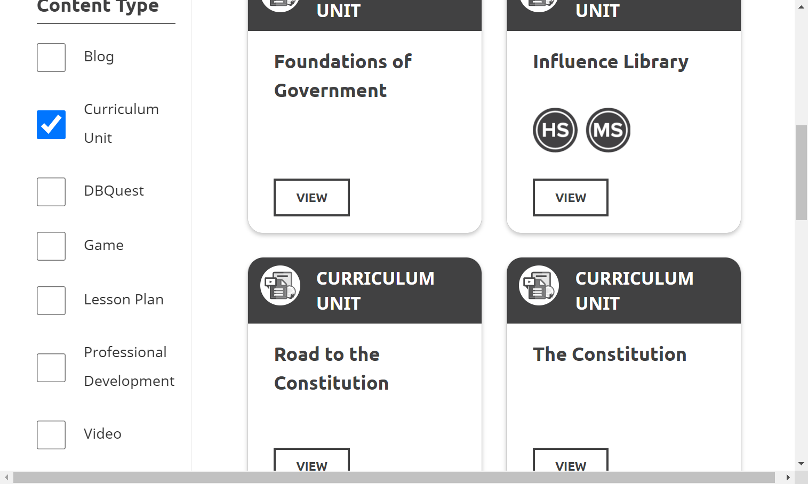 check_circle 10:16:45 PM cardtitle is displayed successfully 
check_circle 10:16:45 PM Iphone potrait resize is successfull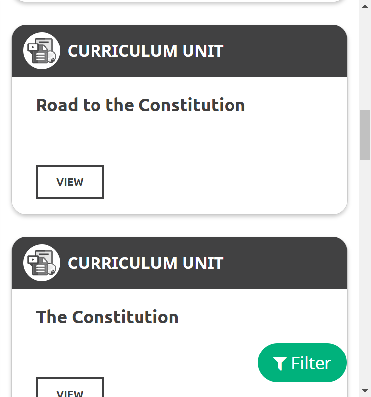 check_circle 10:16:48 PM cardtitle is displayed successfully 
check_circle 10:16:48 PM Iphone landscape resize is successfull 
check_circle 10:16:49 PM cardtitle is displayed successfully 
check_circle 10:16:49 PM Samsung Galaxy potrait resize is successfull 
check_circle 10:16:49 PM cardtitle is displayed successfully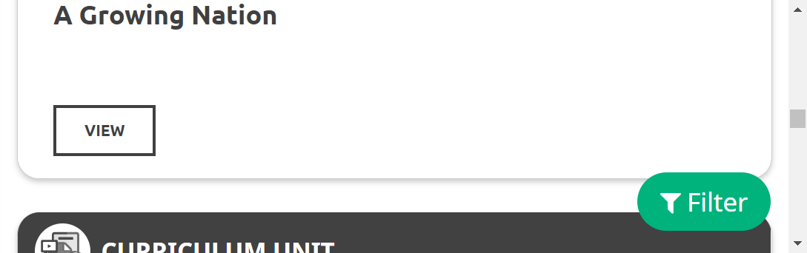 check_circle 10:16:49 PM Samsung Galaxy landscape resize is successfull 
-
-
HomepageHeader Jun 27, 2022 10:16:49 PM passJun 27, 2022 10:16:49 PM Jun 27, 2022 10:18:16 PM 0h 1m 26s+972ms
-
C1 - Do you see the iCivics Logo in the upper left?
Jun 27, 2022 10:17:01 PM 0h 0m 10s+49ms passStatus Timestamp Details check_circle 10:16:56 PM URL Verified successfully 
check_circle 10:16:56 PM Icivics logo is displayed 
check_circle 10:16:57 PM The Element clicked 
check_circle 10:17:01 PM Page reloads successfully 
-
C2 - While on the iCivics Home Page, do you see buttons for Donate, Shop, and My iCivics in the navigation bar?
Jun 27, 2022 10:17:32 PM 0h 0m 29s+763ms passStatus Timestamp Details check_circle 10:17:06 PM URL Verified successfully 
check_circle 10:17:07 PM Donatebutton is display 
check_circle 10:17:07 PM Shopbutton is dislay 
check_circle 10:17:08 PM Signin button is display 
check_circle 10:17:08 PM The Element SIGN IN clicked 
check_circle 10:17:10 PM The Element SIGN IN clicked 
check_circle 10:17:28 PM The Element LOG IN clicked 
check_circle 10:17:32 PM Myicivicsbutton is display 
-
C2 - While on the iCivics Home Page, do you see buttons for Donate, Shop, and My iCivics in the navigation bar?
Jun 27, 2022 10:18:05 PM 0h 0m 31s+430ms passStatus Timestamp Details check_circle 10:17:38 PM The Element SIGN IN clicked 
check_circle 10:17:39 PM The Element SIGN IN clicked 
check_circle 10:18:01 PM The Element LOG IN clicked 
check_circle 10:18:05 PM Donatebutton is display after login 
check_circle 10:18:05 PM Shopbutton is display after login 
check_circle 10:18:05 PM Myicivicsbutton is display after login 
-
C1538 - Does the donation popup NOT show?
Jun 27, 2022 10:18:16 PM 0h 0m 9s+807ms passStatus Timestamp Details check_circle 10:18:11 PM URL Verified successfully 
check_circle 10:18:16 PM The Element DONATE clicked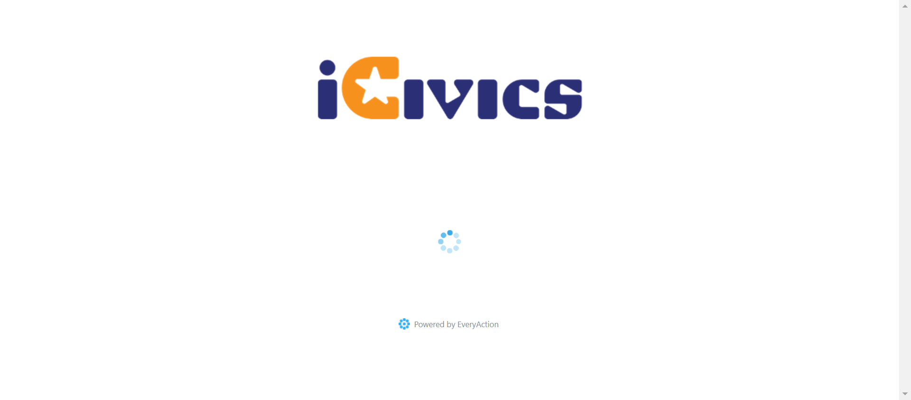 check_circle 10:18:16 PM Donation Popup is not present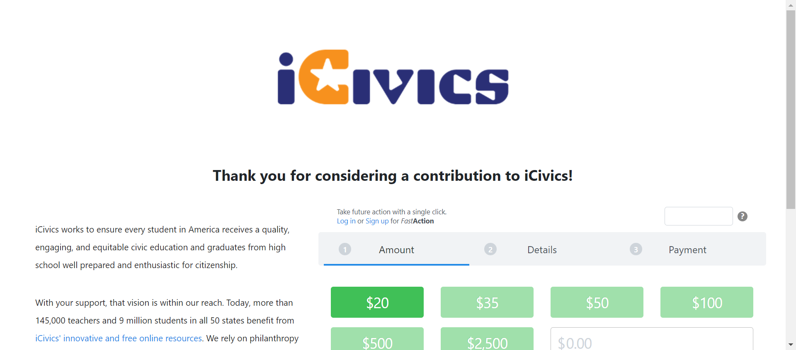
-
-
HomepageHeaderteach2 Jun 27, 2022 10:18:17 PM failJun 27, 2022 10:18:17 PM Jun 27, 2022 10:19:27 PM 0h 1m 10s+616ms
-
C19 - If you are viewing one of the pages in the Teach submenu, is that page underlined in the submenu?
Jun 27, 2022 10:19:27 PM 0h 1m 9s+576ms failStatus Timestamp Details check_circle 10:18:44 PM Teachsubmenu is display 
check_circle 10:19:12 PM The Element teach clicked 
cancel 10:19:15 PM Selected page is not underlined 
check_circle 10:19:18 PM The Element teach clicked 
check_circle 10:19:22 PM The mouse over by xpath : (//a[text()='Educator Community'])[2] is performed. 
cancel 10:19:27 PM Selected page is not underlined 
check_circle 10:19:27 PM The Element teach clicked 
check_circle 10:19:27 PM Teach submenu is close on clicking again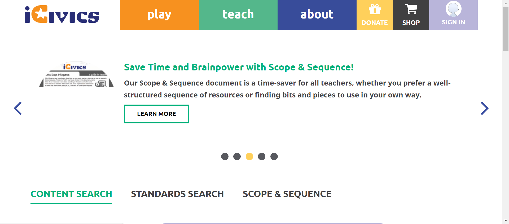
-
-
HomepageHeaderteach Jun 27, 2022 10:19:28 PM passJun 27, 2022 10:19:28 PM Jun 27, 2022 10:21:26 PM 0h 1m 58s+931ms
-
C15 - When you select Teach, does a submenu open below the Teach button?
Jun 27, 2022 10:19:35 PM 0h 0m 5s+937ms passStatus Timestamp Details check_circle 10:19:34 PM The Element teach clicked 
check_circle 10:19:35 PM Teachsubmenu is display 
-
C16 - Do you see links to Search Our Library, Scope and Sequence, Professional Development, Get Started, Educatory Community, and FAQ in the submenu?
Jun 27, 2022 10:19:45 PM 0h 0m 8s+541ms passStatus Timestamp Details check_circle 10:19:43 PM The Element teach clicked 
check_circle 10:19:43 PM Teachsubmenu is display 
check_circle 10:19:43 PM Teachbutton submenu count is 6 
check_circle 10:19:43 PM Teachbutton submenu is SEARCH OUR LIBRARY 
check_circle 10:19:44 PM Teachbutton submenu is SCOPE & SEQUENCE 
check_circle 10:19:44 PM Teachbutton submenu is PROFESSIONAL DEVELOPMENT 
check_circle 10:19:44 PM Teachbutton submenu is GET STARTED 
check_circle 10:19:44 PM Teachbutton submenu is EDUCATOR COMMUNITY 
check_circle 10:19:45 PM Teachbutton submenu is FAQ 
-
C17 - When you select a link in the submenu, are you navigated to the appropriate page?
Jun 27, 2022 10:21:20 PM 0h 1m 34s+221ms passStatus Timestamp Details check_circle 10:19:51 PM The mouse over by xpath : (//a[@title='Search Our Library'])[3] is performed. 
check_circle 10:19:51 PM The element [[ChromeDriver: chrome on WINDOWS (85f2aacf9e0e25a8177d506d381f75a8)] -> xpath: (//li[@class='first search our library']/a)[2]] is visible 
check_circle 10:19:51 PM The expected text contains the actual SEARCH OUR LIBRARY 
check_circle 10:20:12 PM The Element SEARCH OUR LIBRARY clicked 
check_circle 10:20:12 PM The expected https://staging.d9.icivics.org/teachers url as same as the https://staging.d9.icivics.org/teachers actual url. 
check_circle 10:20:13 PM The expected text contains the actual CONTENT SEARCH 
check_circle 10:20:13 PM The mouse over by xpath : (//a[@title='Search Our Library'])[3] is performed. 
check_circle 10:20:13 PM The element [[ChromeDriver: chrome on WINDOWS (85f2aacf9e0e25a8177d506d381f75a8)] -> xpath: (//a[@title='Scope and Sequence'])[2]] is visible 
check_circle 10:20:13 PM The expected text contains the actual SCOPE & SEQUENCE 
check_circle 10:20:17 PM The Element SCOPE & SEQUENCE clicked 
check_circle 10:20:17 PM The expected https://staging.d9.icivics.org/user/login?destination=/viewpdf%3Fpath%3D/sites/default/files/Scope%2520%2526%2520Sequence%25205.13.pdf url as same as the https://staging.d9.icivics.org/user/login?destination=/viewpdf%3Fpath%3D/sites/default/files/Scope%2520%2526%2520Sequence%25205.13.pdf actual url. 
check_circle 10:20:17 PM The expected text contains the actual Log in to iCivics 
check_circle 10:20:18 PM The mouse over by xpath : (//a[@title='Search Our Library'])[3] is performed. 
check_circle 10:20:18 PM The element [[ChromeDriver: chrome on WINDOWS (85f2aacf9e0e25a8177d506d381f75a8)] -> xpath: (//li[@class='professional development']//a)[2]] is visible 
check_circle 10:20:18 PM The expected text contains the actual PROFESSIONAL DEVELOPMENT 
check_circle 10:20:38 PM The Element PROFESSIONAL DEVELOPMENT clicked 
check_circle 10:20:38 PM The expected https://staging.d9.icivics.org/products/professional-development url as same as the https://staging.d9.icivics.org/products/professional-development actual url. 
check_circle 10:20:39 PM The expected text contains the actual Professional Development 
check_circle 10:20:39 PM The mouse over by xpath : (//a[@title='Search Our Library'])[3] is performed. 
check_circle 10:20:39 PM The element [[ChromeDriver: chrome on WINDOWS (85f2aacf9e0e25a8177d506d381f75a8)] -> xpath: (//li[@class='get started']//a)[2]] is visible 
check_circle 10:20:39 PM The expected text contains the actual GET STARTED 
check_circle 10:21:04 PM The Element GET STARTED clicked 
check_circle 10:21:04 PM The expected https://staging.d9.icivics.org/getstarted url as same as the https://staging.d9.icivics.org/getstarted actual url. 
check_circle 10:21:04 PM The expected text contains the actual Welcome to iCivics! 
check_circle 10:21:04 PM The mouse over by xpath : (//a[@title='Search Our Library'])[3] is performed. 
check_circle 10:21:04 PM The element [[ChromeDriver: chrome on WINDOWS (85f2aacf9e0e25a8177d506d381f75a8)] -> xpath: (//li[@class='educator community']//a)[2]] is visible 
check_circle 10:21:05 PM The expected text contains the actual EDUCATOR COMMUNITY 
check_circle 10:21:11 PM The Element EDUCATOR COMMUNITY clicked 
check_circle 10:21:16 PM The mouse over by xpath : (//a[@title='Search Our Library'])[3] is performed. 
check_circle 10:21:16 PM The element [[ChromeDriver: chrome on WINDOWS (85f2aacf9e0e25a8177d506d381f75a8)] -> xpath: (//li[@class='last faq']//a)[2]] is visible 
check_circle 10:21:16 PM The expected text contains the actual FAQ 
check_circle 10:21:20 PM The Element FAQ clicked 
check_circle 10:21:20 PM The expected https://icivics.zendesk.com/hc/en-us url as same as the https://icivics.zendesk.com/hc/en-us actual url. 
check_circle 10:21:20 PM The expected text contains the actual Getting Started 
check_circle 10:21:20 PM All links in the teach dropdown is verified sucessfully 
-
C20 - When you select Teach again while the submenu is open, does the submenu close?
Jun 27, 2022 10:21:26 PM 0h 0m 4s+800ms passStatus Timestamp Details check_circle 10:21:26 PM The Element teach clicked 
check_circle 10:21:26 PM Teachsubmenu is display 
check_circle 10:21:26 PM The Element teach clicked 
check_circle 10:21:26 PM Teach submenu is close on clicking again 
-
-
HomepageHeaderAbout Jun 27, 2022 10:21:27 PM passJun 27, 2022 10:21:27 PM Jun 27, 2022 10:25:25 PM 0h 3m 58s+538ms
-
C22 - When you select About, does a submenu open below the About button?
Jun 27, 2022 10:22:22 PM 0h 0m 54s+67ms passStatus Timestamp Details check_circle 10:21:54 PM The Element about clicked 
check_circle 10:21:54 PM Aboutsubmenu display successfully 
check_circle 10:22:19 PM The Element clicked 
check_circle 10:22:22 PM For Homepage aboutbutton is not present 
-
C23 - Do you see links to About iCivics, Who We Are, Our Strategy, CIVXNOW, Our Team, Blog, and Contact Us in the submenu?
Jun 27, 2022 10:22:31 PM 0h 0m 7s+165ms passStatus Timestamp Details check_circle 10:22:29 PM The Element about clicked 
check_circle 10:22:29 PM Aboutsubmenu display successfully 
check_circle 10:22:29 PM Aboutbutton submenu count is 7 
check_circle 10:22:29 PM Aboutbutton submenu is ABOUT ICIVICS 
check_circle 10:22:30 PM Aboutbutton submenu is WHO WE ARE 
check_circle 10:22:30 PM Aboutbutton submenu is OUR STRATEGY 
check_circle 10:22:30 PM Aboutbutton submenu is CIVXNOW 
check_circle 10:22:30 PM Aboutbutton submenu is OUR TEAM 
check_circle 10:22:30 PM Aboutbutton submenu is BLOG 
check_circle 10:22:31 PM Aboutbutton submenu is CONTACT US 
-
C24 - When you select a link in the submenu, are you navigated to the appropriate page?
Jun 27, 2022 10:24:55 PM 0h 2m 22s+673ms passStatus Timestamp Details check_circle 10:23:01 PM The mouse over by xpath : (//a[@href='/about'])[3] is performed. 
check_circle 10:23:02 PM The element [[ChromeDriver: chrome on WINDOWS (82e709f11a30b783fba907553c43d458)] -> xpath: (//li[@class='first about icivics']/a)[2]] is visible 
check_circle 10:23:02 PM The expected text contains the actual ABOUT ICIVICS 
check_circle 10:23:22 PM The Element ABOUT ICIVICS clicked 
check_circle 10:23:23 PM The expected https://staging.d9.icivics.org/about url as same as the https://staging.d9.icivics.org/about actual url. 
check_circle 10:23:23 PM The expected text contains the actual iCivics reimagines civic education for American democracy 
check_circle 10:23:23 PM The mouse over by xpath : (//a[@href='/about'])[3] is performed. 
check_circle 10:23:24 PM The element [[ChromeDriver: chrome on WINDOWS (82e709f11a30b783fba907553c43d458)] -> xpath: (//li[contains(@class,'who we')]//a)[2]] is visible 
check_circle 10:23:24 PM The expected text contains the actual WHO WE ARE check_circle 10:23:51 PM The Element WHO WE ARE clicked 
check_circle 10:23:51 PM The expected https://staging.icivics.org/who-we-are url as same as the https://staging.icivics.org/who-we-are actual url. 
check_circle 10:23:54 PM The mouse over by xpath : (//a[@href='/about'])[3] is performed. 
check_circle 10:23:54 PM The element [[ChromeDriver: chrome on WINDOWS (82e709f11a30b783fba907553c43d458)] -> xpath: (//li[@class='our strategy']//a)[2]] is visible 
check_circle 10:23:55 PM The expected text contains the actual OUR STRATEGY 
check_circle 10:24:15 PM The Element OUR STRATEGY clicked 
check_circle 10:24:15 PM The expected https://staging.icivics.org/our-strategy url as same as the https://staging.icivics.org/our-strategy actual url. 
check_circle 10:24:18 PM The mouse over by xpath : (//a[@href='/about'])[3] is performed. 
check_circle 10:24:19 PM The element [[ChromeDriver: chrome on WINDOWS (82e709f11a30b783fba907553c43d458)] -> xpath: (//li[@class='civxnow']//a)[2]] is visible 
check_circle 10:24:19 PM The expected text contains the actual CIVXNOW 
check_circle 10:24:31 PM The Element CIVXNOW clicked 
check_circle 10:24:31 PM The expected https://civxnow.org/ url as same as the https://civxnow.org/ actual url. 
check_circle 10:24:34 PM The mouse over by xpath : (//a[@href='/about'])[3] is performed. 
check_circle 10:24:34 PM The element [[ChromeDriver: chrome on WINDOWS (82e709f11a30b783fba907553c43d458)] -> xpath: (//a[@href='/our-team'])[2]] is visible 
check_circle 10:24:35 PM The expected text contains the actual OUR TEAM 
check_circle 10:24:39 PM The Element OUR TEAM clicked 
check_circle 10:24:40 PM The expected https://staging.icivics.org/our-team url as same as the https://staging.icivics.org/our-team actual url. 
check_circle 10:24:42 PM The mouse over by xpath : (//a[@href='/about'])[3] is performed. 
check_circle 10:24:43 PM The element [[ChromeDriver: chrome on WINDOWS (82e709f11a30b783fba907553c43d458)] -> xpath: (//li[@class='blog']//a)[2]] is visible 
check_circle 10:24:43 PM The expected text contains the actual BLOG 
check_circle 10:24:45 PM The Element BLOG clicked 
check_circle 10:24:46 PM The expected https://staging.d9.icivics.org/news?keys=&tid%5B1%5D=1 url as same as the https://staging.d9.icivics.org/news?keys=&tid%5B1%5D=1 actual url. 
check_circle 10:24:46 PM The expected text contains the actual iCivics Blog and News 
check_circle 10:24:48 PM The mouse over by xpath : (//a[@href='/about'])[3] is performed. 
check_circle 10:24:48 PM The element [[ChromeDriver: chrome on WINDOWS (82e709f11a30b783fba907553c43d458)] -> xpath: (//a[@href='/contact'])[2]] is visible 
check_circle 10:24:49 PM The expected text contains the actual CONTACT US 
check_circle 10:24:52 PM The Element CONTACT US clicked 
check_circle 10:24:52 PM The expected https://icivics.zendesk.com/hc/en-us/requests/new url as same as the https://icivics.zendesk.com/hc/en-us/requests/new actual url. 
check_circle 10:24:55 PM All links in the About dropdown is verified sucessfully 
-
C27 - When you select About again while the submenu is open, does the submenu close?
Jun 27, 2022 10:25:25 PM 0h 0m 29s+13ms passStatus Timestamp Details check_circle 10:25:25 PM The Element about clicked 
check_circle 10:25:25 PM Aboutsubmenu display successfully 
check_circle 10:25:25 PM The Element about clicked 
check_circle 10:25:25 PM About button is clicked again and about menu is close 
-
-
HomepageHeaderplay Jun 27, 2022 10:25:29 PM passJun 27, 2022 10:25:29 PM Jun 27, 2022 10:39:32 PM 0h 14m 3s+247ms
-
C8 - When you select Play, does a submenu open below the Play button?
Jun 27, 2022 10:25:36 PM 0h 0m 6s+273ms passStatus Timestamp Details check_circle 10:25:36 PM playbutton submenu is display 
-
C10- When you select a link in the submenu, are you navigated to the appropriate page?
Jun 27, 2022 10:32:59 PM 0h 7m 21s+629ms passStatus Timestamp Details check_circle 10:26:08 PM The mouse over by xpath : (//*[@title='Play Games'])[3] is performed. 
check_circle 10:26:08 PM The element [[ChromeDriver: chrome on WINDOWS (3c9926ec53c46918e99bef553471d4f2)] -> xpath: (//li[contains(@class,'first all')]//a)[2]] is visible 
check_circle 10:26:08 PM The expected text contains the actual ALL GAMES 
check_circle 10:26:10 PM The Element ALL GAMES clicked 
check_circle 10:26:11 PM The expected https://staging.d9.icivics.org/games url as same as the https://staging.d9.icivics.org/games actual url. 
check_circle 10:26:11 PM The mouse over by xpath : (//*[@title='Play Games'])[3] is performed. 
check_circle 10:26:11 PM The element [[ChromeDriver: chrome on WINDOWS (3c9926ec53c46918e99bef553471d4f2)] -> xpath: (//li[contains(@class,'cast')]//a)[2]] is visible 
check_circle 10:26:12 PM The expected text contains the actual CAST YOUR VOTE 
check_circle 10:26:29 PM The Element CAST YOUR VOTE clicked 
check_circle 10:26:29 PM The expected https://staging.d9.icivics.org/games/cast-your-vote url as same as the https://staging.d9.icivics.org/games/cast-your-vote actual url. 
check_circle 10:26:30 PM The expected text contains the actual Cast Your Vote 
check_circle 10:26:31 PM The mouse over by xpath : (//*[@title='Play Games'])[3] is performed. 
check_circle 10:26:31 PM The element [[ChromeDriver: chrome on WINDOWS (3c9926ec53c46918e99bef553471d4f2)] -> xpath: (//li[@class='counties work: texas']/a)[2]] is visible 
check_circle 10:26:31 PM The expected text contains the actual COUNTIES WORK: TEXAS 
check_circle 10:27:02 PM The Element COUNTIES WORK: TEXAS clicked 
check_circle 10:27:03 PM The expected https://staging.d9.icivics.org/games/counties-work-texas url as same as the https://staging.d9.icivics.org/games/counties-work-texas actual url. 
check_circle 10:27:03 PM The expected text contains the actual Counties Work: Texas 
check_circle 10:27:03 PM The mouse over by xpath : (//*[@title='Play Games'])[3] is performed. 
check_circle 10:27:04 PM The element [[ChromeDriver: chrome on WINDOWS (3c9926ec53c46918e99bef553471d4f2)] -> xpath: (//li[@class='executive command']/a)[2]] is visible 
check_circle 10:27:04 PM The expected text contains the actual EXECUTIVE COMMAND 
check_circle 10:27:31 PM The Element EXECUTIVE COMMAND clicked 
check_circle 10:27:32 PM The expected https://staging.d9.icivics.org/games/executive-command url as same as the https://staging.d9.icivics.org/games/executive-command actual url.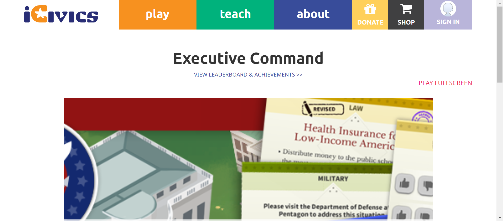 check_circle 10:27:32 PM The expected text contains the actual Executive Command 
check_circle 10:27:32 PM The mouse over by xpath : (//*[@title='Play Games'])[3] is performed. 
check_circle 10:27:33 PM The element [[ChromeDriver: chrome on WINDOWS (3c9926ec53c46918e99bef553471d4f2)] -> xpath: (//li[@class='lawcraft']/a)[2]] is visible 
check_circle 10:27:33 PM The expected text contains the actual LAWCRAFT 
check_circle 10:28:02 PM The Element LAWCRAFT clicked 
check_circle 10:28:02 PM The expected https://staging.d9.icivics.org/games/lawcraft url as same as the https://staging.d9.icivics.org/games/lawcraft actual url. 
check_circle 10:28:02 PM The expected text contains the actual LawCraft 
check_circle 10:28:03 PM The mouse over by xpath : (//*[@title='Play Games'])[3] is performed. 
check_circle 10:28:03 PM The element [[ChromeDriver: chrome on WINDOWS (3c9926ec53c46918e99bef553471d4f2)] -> xpath: (//li[@class='sortify: u.s. citizenship']/a)[2]] is visible 
check_circle 10:28:03 PM The expected text contains the actual SORTIFY: U.S. CITIZENSHIP 
check_circle 10:28:30 PM The Element SORTIFY: U.S. CITIZENSHIP clicked 
check_circle 10:28:31 PM The expected https://staging.d9.icivics.org/games/sortify-us-citizenship url as same as the https://staging.d9.icivics.org/games/sortify-us-citizenship actual url. 
check_circle 10:28:31 PM The expected text contains the actual Sortify: U.S. Citizenship 
check_circle 10:28:31 PM The mouse over by xpath : (//*[@title='Play Games'])[3] is performed. 
check_circle 10:28:31 PM The element [[ChromeDriver: chrome on WINDOWS (3c9926ec53c46918e99bef553471d4f2)] -> xpath: (//li[@class='argument wars']/a)[2]] is visible 
check_circle 10:28:32 PM The expected text contains the actual ARGUMENT WARS 
check_circle 10:28:55 PM The Element ARGUMENT WARS clicked 
check_circle 10:28:56 PM The expected https://staging.d9.icivics.org/games/argument-wars url as same as the https://staging.d9.icivics.org/games/argument-wars actual url. 
check_circle 10:28:56 PM The expected text contains the actual Argument Wars 
check_circle 10:28:57 PM The mouse over by xpath : (//*[@title='Play Games'])[3] is performed. 
check_circle 10:28:57 PM The element [[ChromeDriver: chrome on WINDOWS (3c9926ec53c46918e99bef553471d4f2)] -> xpath: (//li[@class='convene the council']/a)[2]] is visible 
check_circle 10:28:57 PM The expected text contains the actual CONVENE THE COUNCIL 
check_circle 10:29:20 PM The Element CONVENE THE COUNCIL clicked 
check_circle 10:29:21 PM The expected https://staging.d9.icivics.org/games/convene-council url as same as the https://staging.d9.icivics.org/games/convene-council actual url. 
check_circle 10:29:21 PM The expected text contains the actual Convene the Council 
check_circle 10:29:22 PM The mouse over by xpath : (//*[@title='Play Games'])[3] is performed. 
check_circle 10:29:22 PM The element [[ChromeDriver: chrome on WINDOWS (3c9926ec53c46918e99bef553471d4f2)] -> xpath: (//li[@class='court quest']/a)[2]] is visible 
check_circle 10:29:22 PM The expected text contains the actual COURT QUEST 
check_circle 10:29:45 PM The Element COURT QUEST clicked 
check_circle 10:29:46 PM The expected https://staging.d9.icivics.org/games/court-quest url as same as the https://staging.d9.icivics.org/games/court-quest actual url. 
check_circle 10:29:46 PM The expected text contains the actual Court Quest 
check_circle 10:29:47 PM The mouse over by xpath : (//*[@title='Play Games'])[3] is performed. 
check_circle 10:29:47 PM The element [[ChromeDriver: chrome on WINDOWS (3c9926ec53c46918e99bef553471d4f2)] -> xpath: (//li[@class='game odyssey']/a)[2]] is visible 
check_circle 10:29:47 PM The expected text contains the actual GAME ODYSSEY 
check_circle 10:30:15 PM The Element GAME ODYSSEY clicked 
check_circle 10:30:15 PM The expected https://staging.d9.icivics.org/game-odyssey url as same as the https://staging.d9.icivics.org/game-odyssey actual url. 
check_circle 10:30:15 PM The expected text contains the actual iCivics Game Odyssey 
check_circle 10:30:20 PM The mouse over by xpath : (//*[@title='Play Games'])[3] is performed. 
check_circle 10:30:20 PM The element [[ChromeDriver: chrome on WINDOWS (3c9926ec53c46918e99bef553471d4f2)] -> xpath: (//li[@class='newsfeed defenders']//a)[2]] is visible 
check_circle 10:30:20 PM The expected text contains the actual NEWSFEED DEFENDERS 
check_circle 10:30:38 PM The Element NEWSFEED DEFENDERS clicked 
check_circle 10:30:38 PM The expected https://staging.d9.icivics.org/games/newsfeed-defenders url as same as the https://staging.d9.icivics.org/games/newsfeed-defenders actual url. 
check_circle 10:30:41 PM The expected text contains the actual NewsFeed Defenders 
check_circle 10:30:42 PM The mouse over by xpath : (//*[@title='Play Games'])[3] is performed. 
check_circle 10:30:42 PM The element [[ChromeDriver: chrome on WINDOWS (3c9926ec53c46918e99bef553471d4f2)] -> xpath: (//li[contains(@class,'last win')]//a)[2]] is visible 
check_circle 10:30:42 PM The expected text contains the actual WIN THE WHITE HOUSE 
check_circle 10:31:07 PM The Element WIN THE WHITE HOUSE clicked 
check_circle 10:31:07 PM The expected https://staging.d9.icivics.org/games/win-white-house url as same as the https://staging.d9.icivics.org/games/win-white-house actual url. 
check_circle 10:31:07 PM The expected text contains the actual Win the White House 
check_circle 10:31:08 PM The mouse over by xpath : (//*[@title='Play Games'])[3] is performed. 
check_circle 10:31:08 PM The element [[ChromeDriver: chrome on WINDOWS (3c9926ec53c46918e99bef553471d4f2)] -> xpath: (//li[@class='branches of power']/a)[2]] is visible 
check_circle 10:31:08 PM The expected text contains the actual BRANCHES OF POWER 
check_circle 10:31:36 PM The Element BRANCHES OF POWER clicked 
check_circle 10:31:36 PM The expected https://staging.d9.icivics.org/games/branches-power url as same as the https://staging.d9.icivics.org/games/branches-power actual url. 
check_circle 10:31:37 PM The expected text contains the actual Branches of Power 
check_circle 10:31:37 PM The mouse over by xpath : (//*[@title='Play Games'])[3] is performed. 
check_circle 10:31:37 PM The element [[ChromeDriver: chrome on WINDOWS (3c9926ec53c46918e99bef553471d4f2)] -> xpath: (//li[@class='counties work']/a)[2]] is visible 
check_circle 10:31:38 PM The expected text contains the actual COUNTIES WORK 
check_circle 10:31:41 PM The Element COUNTIES WORK clicked 
check_circle 10:31:41 PM The expected https://staging.d9.icivics.org/games/counties-work url as same as the https://staging.d9.icivics.org/games/counties-work actual url. 
check_circle 10:31:41 PM The expected text contains the actual Counties Work 
check_circle 10:31:42 PM The mouse over by xpath : (//*[@title='Play Games'])[3] is performed. 
check_circle 10:31:42 PM The element [[ChromeDriver: chrome on WINDOWS (3c9926ec53c46918e99bef553471d4f2)] -> xpath: (//li[@class='do i have a right?'])[2]] is visible 
check_circle 10:31:42 PM The expected text contains the actual DO I HAVE A RIGHT? 
check_circle 10:32:05 PM The Element DO I HAVE A RIGHT? clicked 
check_circle 10:32:05 PM The expected https://staging.d9.icivics.org/games/do-i-have-right url as same as the https://staging.d9.icivics.org/games/do-i-have-right actual url. 
check_circle 10:32:05 PM The expected text contains the actual Do I Have a Right? 
check_circle 10:32:06 PM The mouse over by xpath : (//*[@title='Play Games'])[3] is performed. 
check_circle 10:32:06 PM The element [[ChromeDriver: chrome on WINDOWS (3c9926ec53c46918e99bef553471d4f2)] -> xpath: (//li[@class='immigration nation']/a)[2]] is visible 
check_circle 10:32:06 PM The expected text contains the actual IMMIGRATION NATION 
check_circle 10:32:31 PM The Element IMMIGRATION NATION clicked 
check_circle 10:32:31 PM The expected https://staging.d9.icivics.org/games/immigration-nation url as same as the https://staging.d9.icivics.org/games/immigration-nation actual url. 
check_circle 10:32:31 PM The expected text contains the actual Immigration Nation 
check_circle 10:32:32 PM The mouse over by xpath : (//*[@title='Play Games'])[3] is performed. 
check_circle 10:32:32 PM The element [[ChromeDriver: chrome on WINDOWS (3c9926ec53c46918e99bef553471d4f2)] -> xpath: (//li[@class='race to ratify']/a)[2]] is visible 
check_circle 10:32:33 PM The expected text contains the actual RACE TO RATIFY 
check_circle 10:32:58 PM The Element RACE TO RATIFY clicked 
check_circle 10:32:59 PM The expected https://staging.d9.icivics.org/games/race-ratify url as same as the https://staging.d9.icivics.org/games/race-ratify actual url. 
check_circle 10:32:59 PM The expected text contains the actual Race to Ratify 
check_circle 10:32:59 PM All links in the play dropdown is verified sucessfully 
-
C9- Do you see links to All Games, as well as each individual game in the submenu?
Jun 27, 2022 10:33:39 PM 0h 0m 37s+398ms passStatus Timestamp Details check_circle 10:33:09 PM playbutton submenu is display 
check_circle 10:33:39 PM playbutton submenu count is 0 
-
C12- If you are viewing one of the pages in the Play submenu, is that page underlined in the submenu?
Jun 27, 2022 10:39:18 PM 0h 5m 36s+994ms passStatus Timestamp Details check_circle 10:34:33 PM The Element play clicked 
check_circle 10:34:36 PM Playbutton submenu count is 17 
check_circle 10:34:42 PM The Element play clicked 
check_circle 10:34:49 PM Selected page is underlined 
check_circle 10:34:53 PM The Element play clicked 
check_circle 10:35:02 PM The Element play clicked 
check_circle 10:35:08 PM Selected page is underlined 
check_circle 10:35:11 PM The Element play clicked 
check_circle 10:35:19 PM The Element play clicked 
check_circle 10:35:25 PM Selected page is underlined 
check_circle 10:35:27 PM The Element play clicked 
check_circle 10:35:35 PM The Element play clicked 
check_circle 10:35:41 PM Selected page is underlined 
check_circle 10:35:43 PM The Element play clicked 
check_circle 10:35:51 PM The Element play clicked 
check_circle 10:35:57 PM Selected page is underlined 
check_circle 10:35:59 PM The Element play clicked 
check_circle 10:36:07 PM The Element play clicked 
check_circle 10:36:14 PM Selected page is underlined 
check_circle 10:36:15 PM The Element play clicked 
check_circle 10:36:23 PM The Element play clicked 
check_circle 10:36:30 PM Selected page is underlined 
check_circle 10:36:31 PM The Element play clicked 
check_circle 10:36:39 PM The Element play clicked 
check_circle 10:36:46 PM Selected page is underlined 
check_circle 10:36:47 PM The Element play clicked 
check_circle 10:36:55 PM The Element play clicked 
check_circle 10:37:02 PM Selected page is underlined 
check_circle 10:37:04 PM The Element play clicked 
check_circle 10:37:11 PM The Element play clicked 
check_circle 10:37:18 PM Selected page is underlined 
check_circle 10:37:20 PM The Element play clicked 
check_circle 10:37:28 PM The Element play clicked 
check_circle 10:37:34 PM Selected page is underlined 
check_circle 10:37:36 PM The Element play clicked 
check_circle 10:37:44 PM The Element play clicked 
check_circle 10:37:50 PM Selected page is underlined 
check_circle 10:37:52 PM The Element play clicked 
check_circle 10:38:01 PM The Element play clicked 
check_circle 10:38:07 PM Selected page is underlined 
check_circle 10:38:13 PM The Element play clicked 
check_circle 10:38:22 PM The Element play clicked 
check_circle 10:38:28 PM Selected page is underlined 
check_circle 10:38:30 PM The Element play clicked 
check_circle 10:38:37 PM The Element play clicked 
check_circle 10:38:44 PM Selected page is underlined 
check_circle 10:38:46 PM The Element play clicked 
check_circle 10:38:53 PM The Element play clicked 
check_circle 10:39:00 PM Selected page is underlined 
check_circle 10:39:02 PM The Element play clicked 
check_circle 10:39:10 PM The Element play clicked 
check_circle 10:39:16 PM Selected page is underlined 
check_circle 10:39:18 PM The Element play clicked 
-
C13- When you select Play again while the submenu is open, does the submenu close?
Jun 27, 2022 10:39:32 PM 0h 0m 9s+343ms passStatus Timestamp Details check_circle 10:39:31 PM playbutton submenu is display 
check_circle 10:39:32 PM The Element play clicked 
check_circle 10:39:32 PM On clicking Playbutton again submenu is close 
-
info_outline
check_circle
cancel
cancel
error
warning
redo
clear
Dashboard
Tests
45
Steps
533
Start
Jun 27, 2022 09:54:53 PM
End
Jun 27, 2022 10:39:32 PM
Time Taken
0h 44m 39s+200ms